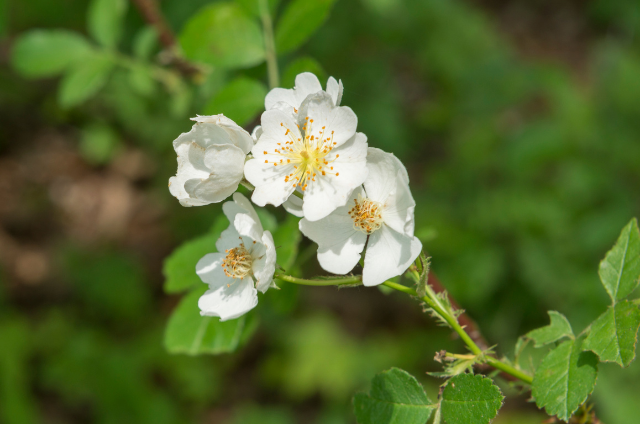
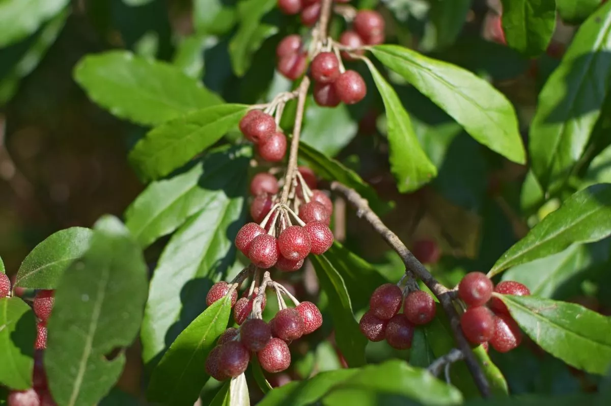
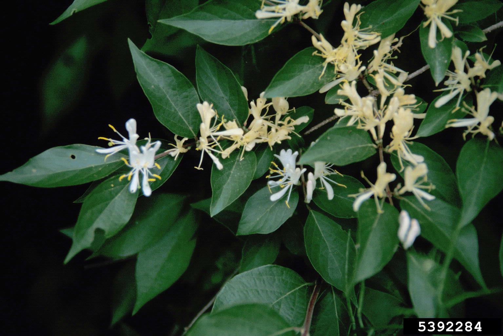
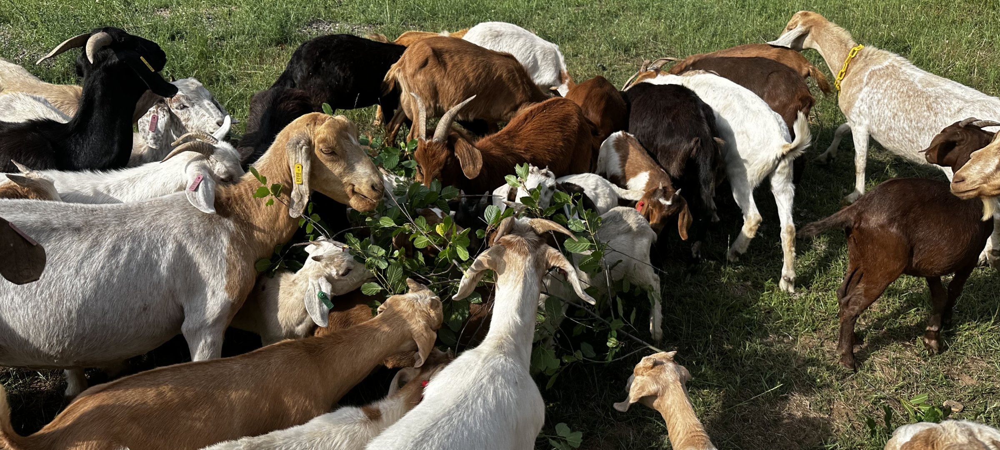

Kentucky State University Cooperative Extension
Small-ruminant education, herd-health support, workshops, and contacts for producers.
Small Farm Development program ↗Multiflora rose, autumn olive, and bush honeysuckle take up grazing space and keep returning after a single cutting. Targeted goat browsing gives Kentucky producers a practical way to weaken that brush over time.
Goats naturally eat leaves, twigs, and brush before grass. A Kentucky farmer can use that habit to clear pasture and still sell the goats for meat later (Launchbaugh & Walker, 2006).
The work still has to be managed. Choose the problem area, keep the goats there long enough to strip most of the leaves, then move them before useful forage is overgrazed. When the brush sends up new growth, bring the herd back. In a 2022 multiflora rose study, one season of browsing left stems 35% shorter with a 56% lower leaf-to-stem mass ratio (Bowden et al., 2022).
This site introduces the three main invasive shrubs, explains why goats suit the job, lays out a field plan, covers fencing and goat care, and lists Kentucky resources for local advice. Spring to early summer is the best window for heavy browsing (Treadwell et al., 2023). Plan on repeating for two to three seasons, since woody plants resprout after a single pass (Natural Resources Conservation Service, 2010).
Section 1
These shrubs are easy to miss when there are only a few. Once they form a thicket, they take sunlight, space, and water away from useful forage and make it harder for livestock to move through the field.

Rosa multiflora

Elaeagnus umbellata

Lonicera species
Section 2
A mower cuts everything at one height. Goats work around rocks and rough ground, reach into thickets, strip leaves, and may debark young stems. Spanish, Kiko, Nigerian Dwarf, and Boer goats can all be used for brush control.
These figures are planning estimates from the research (Treadwell et al., 2023). Actual costs will change with acreage, terrain, labor, equipment, and the density of the brush.
| Method | Typical cost noted in the research | What to consider |
|---|---|---|
| Targeted goat browsing | About $1 per goat per day, including fencing and labor | Works on rough ground and the animals may later be sold, but secure fencing, daily care, and repeated passes are necessary. |
| Herbicide | About $20–$250 per acre, plus chemical cost | Can be selective, but may need repeat treatment. Always follow the label and protect water and non-target plants. |
| Mowing | About $100–$500 per acre | Fast on open ground, but removes forage, leaves debris, and does not stop woody roots from resprouting. |
Section 3
Start with one paddock you can watch closely. A smaller trial will teach you more than putting the whole farm into the first attempt.
Section 4
Targeted browsing only works when the goats stay safely contained and receive the same daily care they would in any other grazing system.
Section 5
For stocking rates, plant identification, fencing, or a site-specific plan, local advice matters. Soil, slope, herd size, and brush density can change the recommendation.
Small-ruminant education, herd-health support, workshops, and contacts for producers.
Small Farm Development program ↗Practical Kentucky information on housing, fencing, feeding, minerals, health, and management.
Read the goat guide ↗A Kentucky-focused identification and management guide from Forestry and Natural Resources.
Open FOR-175 ↗Technical guidance on repeated defoliation, timing, stocking ranges, and pasture rotation.
Open the technical note ↗Credits & citations
This website is adapted from my Extension article on targeted goat browsing in Kentucky pastures. The sources below were used for the plant descriptions, grazing guidance, safety notes, and examples.
Akron Beacon Journal. (2024, August 21). Invasive plants in Kentucky, where to get help stopping them. https://www.beaconjournal.com/story/news/local/2024/08/21/invasive-plants-in-kentucky-where-to-get-help-stopping-them/74779950007/
Bowden, R. D., Caylor, A., Hemmelgarn, G., Kresse, M., Martin, A., & Althouse, M. (2022). Prescribed browsing by goats shows promise in controlling multiflora rose (Rosa multiflora) in a deciduous forest at the Erie National Wildlife Refuge in northwestern Pennsylvania. Natural Areas Journal, 42(3), 196–205. https://doi.org/10.3375/21-30
Byrd, J. D., Jr., & Maddox, V. (2025). Multiflora rose (Publication 3280). Mississippi State University Extension Service. http://extension.msstate.edu/publications/multiflora-rose
Crocker, E., Muller, J., Stringer, J., Cox, B., & Thomas, B. (2023). Bush honeysuckle (FOR-175). University of Kentucky Cooperative Extension Service. https://publications.mgcafe.uky.edu/files/FOR175.pdf
Launchbaugh, K. L., & Walker, J. W. (2006). Targeted grazing—A new paradigm for livestock management. In K. L. Launchbaugh, J. W. Walker, & R. J. Daines (Eds.), Targeted grazing: A natural approach to vegetation management and landscape enhancement (pp. 2–8). U.S. Department of Agriculture, Forest Service, Rocky Mountain Research Station. https://www.fs.usda.gov/rm/pubs/rmrs_gtr292/2006_launchbaugh_k001.pdf
Luginbuhl, J.-M., Green, J. T., Jr., Poore, M. H., & Conrad, A. P. (2001). Goats to control the encroachment of undesirable brush and woody species in cattle pastures. In Proceedings of the XIX International Grassland Congress. https://uknowledge.uky.edu/igc/19/25/3/
Treadwell, M., Brooke, C., & Sullivan, E. (2023). Targeted grazing with goats and sheep (RWFM-PU-401). https://uploads-ssl.webflow.com/60143e4f3362793ccc653755/6560b6dd24c86c78632f44e5_RWFM-PU-401.pdf
Natural Resources Conservation Service. (2010). Management for brush and weed control. U.S. Department of Agriculture. https://efotg.sc.egov.usda.gov/references/public/MI/GZ_TN7_Management_for_brush_and_weed_control.pdf
Natural Resources Conservation Service. (2025). Conservation practice standard 528: Prescribed grazing. U.S. Department of Agriculture. https://www.nrcs.usda.gov/sites/default/files/2025-07/528-nhcp-cps-grazing-management-2025-rev.pdf
Yancey, M., & Gagnon, J. L. (2020). Invasive exotic plant species: Autumn olive (Elaeagnus umbellata) (Publication 420-321). Virginia Cooperative Extension. https://vtechworks.lib.vt.edu/server/api/core/bitstreams/24bd6da6-5364-4ef6-90c5-fdce98f99b6a/content
